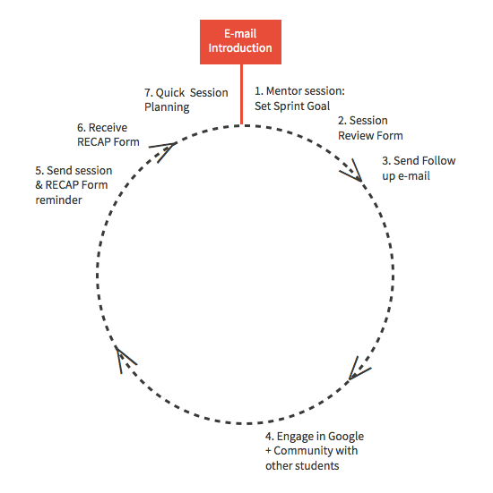

Good mentorship extends beyond just the mentor session itself. Let's take a look at all that takes place to provide meaningful learning support.
Intro E-mail:
The first e-mail you send a student is a great way to set the tone for your mentorship.
1. Mentor Session: Set Sprint Goal
Mentor sessions are 30 minutes, once a week per student. At the end of each session it’s important that you set a Weekly Sprint Goal -- a short term goal that the student is expected to accomplish in the upcoming week. This provides a weekly focus and clear steps to follow a"er a session
2. Fill Out Student CRM
Immediately after each session, fill out your student's CRM.
3. Send Follow Up E-mail
After each session, write a follow up e-mail summarizing what was covered in the session, the student’s weekly focus, and their Spring Goal.
4. Engage in Google+ Community With Other Students
Set aside time each week to explore our student Google+ communities and engage with students about their work and the questions they have.
5. Send Session & RECAP Form Reminder
In GMAIL, automate an e-mail to be sent one day before each mentor session reminding students of their upcoming mentor session and to submit their RECAP Form.
6. Mentor Session Prep
Take 10 minutes before the mentor session to review your student’s RECAP Form and any work they’ve done in the past week.